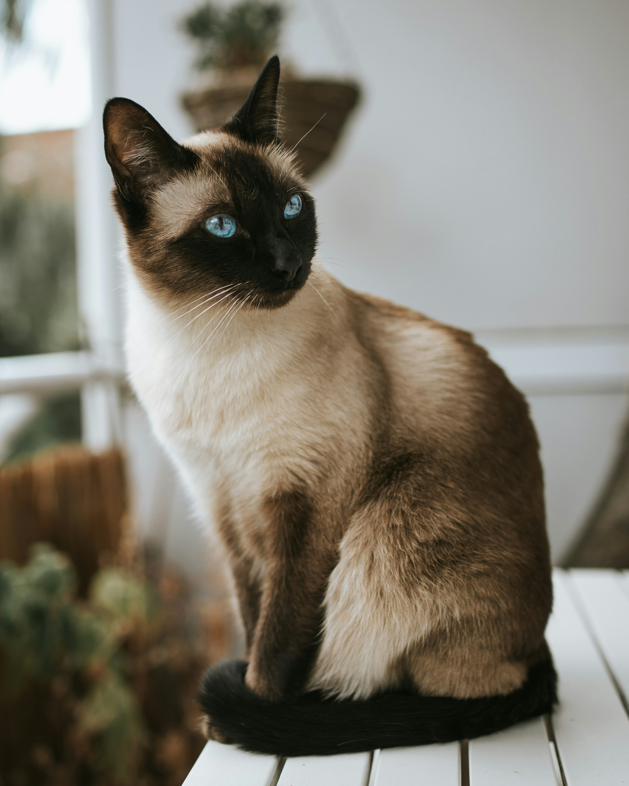

Siamese

Photo by Nika Benedictova on Unsplash
History
The Siamese cat breed has a long and fascinating history. Originating in Thailand (formerly Siam), these cats were highly valued by the Thai people and were often kept as pets by royalty. The breed was introduced to the West in the late 19th century and quickly gained popularity for their distinctive appearance and friendly nature.
Appearance and Temperament
The Siamese cat has a sleek, short coat that is cream-colored with dark points on the ears, face, paws, and tail. Their eyes are typically blue. They are a medium-sized, sturdy breed with a friendly and affectionate temperament. They are known for being social and enjoy being around people. They are also intelligent and can be trained to do tricks or use a litter box. They are generally good with children and other pets, making them a popular choice for families.
Source: https://cats.com/cat-breeds/siamese
Back to previous page